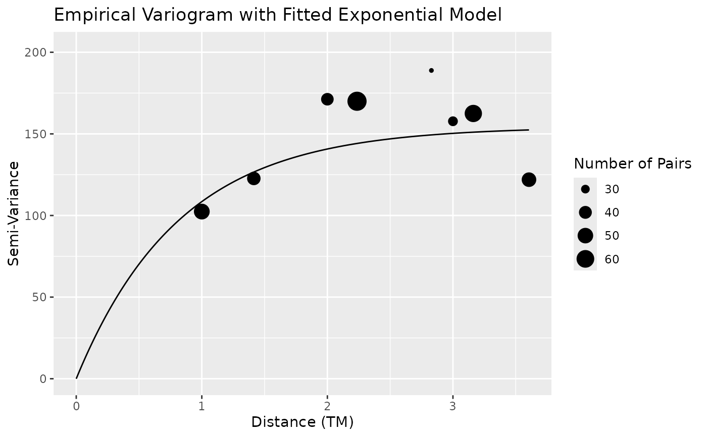
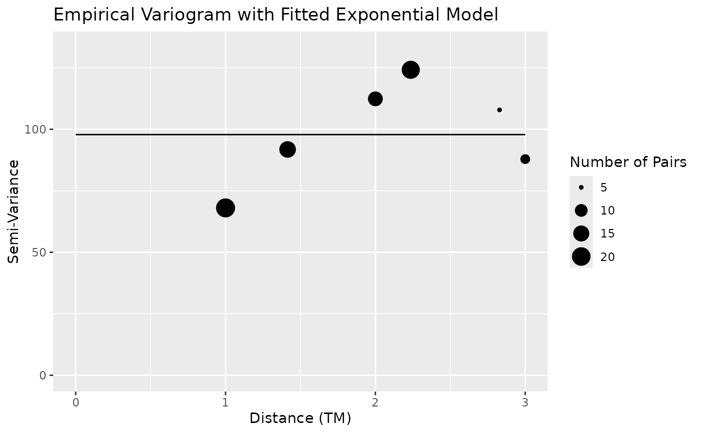

Plots an empirical semi-variogram of the residuals from the spatial linear model with the fitted parametric model as a curve overtop of the binned points. By default, the empirical semi-variogram only shows distances that are less than or equal to the maximum distance in the data set divided by 2. Therefore, it's possible that the REML-fitted model will not "fit" the points perfectly.
# S3 method for slmfit plot(x, ...)
| x | is an object of class |
|---|---|
| ... | further arguments passed to or from other methods. |
a plot of the empirical semi-variogram with the fitted model overlayed.
data(exampledataset) ## load a toy data set slmobj <- slmfit(formula = counts ~ pred1 + pred2, data = exampledataset, xcoordcol = 'xcoords', ycoordcol = 'ycoords', areacol = 'areavar') plot(slmobj)data(exampledataset) ## load a toy data set exampledataset$strata <- c(rep("A", 19), rep("B", 21)) strataobj <- slmfit(formula = counts ~ pred1 + pred2, data = exampledataset, stratacol = "strata", xcoordcol = 'xcoords', ycoordcol = 'ycoords', areacol = 'areavar') plot(strataobj[[1]])